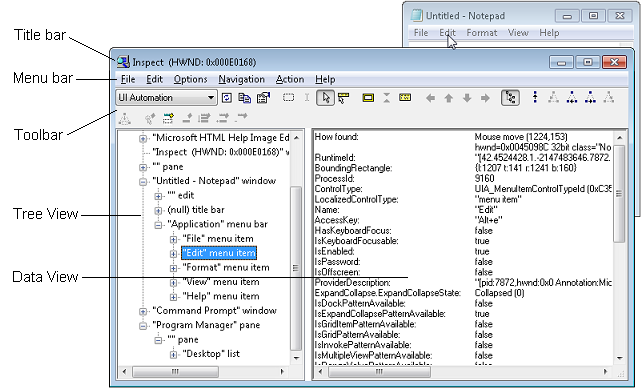

title: Accessibility tools - Inspect description: Learn how to use Inspect, a Windows-based tool that can select any UI element and view its accessibility data. ms.assetid: 38edacbc-cf24-4818-b029-561b21e3704c keywords:
[!IMPORTANT] Inspect is a legacy tool. We recommend Accessibility Insights instead.
Inspect (Inspect.exe) is a Windows-based tool that can select any UI element and view its accessibility data. You can view both Microsoft UI Automation properties and control patterns and Microsoft Active Accessibility (MSAA) properties. Inspect can also test the navigational structure of the automation elements in the UI Automation tree and the accessible objects in the Microsoft Active Accessibility hierarchy.
To examine UI Automation, UI Automation must be present on the system. For more information, see Run-Time Requirements.
Inspect is installed as one of the tools in the Windows Software Development Kit (SDK), which includes all of the accessibility-related tools documented in this section. Inspect is not distributed as a separate download.
[!NOTE] For older versions of the Windows SDK, see the Windows SDK and emulator archive.
Inspect.exe is located in the \bin\<version>\<platform> folder of the SDK installation path. You don't typically need to run it as administrator.
The Inspect window has several main parts:
The commands available in the menu bar are also available in the toolbar. The following image shows Inspect querying the UI Automation properties of the Edit menu element in Notepad.

When you start Inspect, the tree view shows the location of the currently selected UI element in the element hierarchy while the data view shows the property information for the selected UI element. You can navigate the UI to view accessibility information about every element in the UI. By default, Inspect tracks the keyboard or mouse focus. As focus changes, the data view updates with the property information of the element with focus.
To navigate among UI elements, you can use any of the following elements:
The last three options enable you to navigate the tree hierarchy of the UI. The structure of this tree might differ slightly between UI Automation and Microsoft Active Accessibility modes.
The data view shows the property information of the UI element that is currently selected. You can configure Inspect to show you information about all accessibility properties or a subset of those properties. You can also specify other viewing options, such as whether the Inspect window remains on top of other user interfaces, or whether Inspect highlights a bounding rectangle around the selected element.
Once you have configured Inspect to work the way you want, begin navigating among UI elements and viewing property information. Inspect saves your configuration settings when it closes and uses them to initialize your next Inspect session.
To configure property settings, follow these steps:
To configure viewing options, you can select the following viewing options in the Options menu or the toolbar.
| When this option is selected | Inspect takes this action |
|---|---|
| Always on Top | Appears on top of any other window on the screen. |
| MSAA Mode | Displays Microsoft Active Accessibility property information. |
| UI Automation Mode | Displays UI Automation property information. |
| Visible Windows Only View | Available in MSAA mode only. |
| Raw View | Presents the raw view of the UI Automation tree or MSAA tree in the tree view. |
| Control View | Presents the control view of the UI Automation tree in the tree view. Available in UI Automation mode only. |
| Content View | Presents the content view of the UI Automation tree in the tree view. Available in UI Automation mode only |
| Active Hover Toolbar | Activates toolbar buttons on mouse hover, instead of requiring a mouse click. |
| Beep on Error | Beeps when an error is detected during a UI Automation or MSAA operation. |
| SPI_SCREENREADER Flag | Assumes a screen reader is present. This option indicates that an application should provide information textually instead of graphically. You shouldn't assume this flag is set simply because a screen reader is present. |
| Show Highlight Rectangle | Highlights a rectangle around the element with focus. |
| Show Caret Highlight | Highlights the caret. Available in MSAA mode only. |
| Show Information Tooltip | Shows property information in a tooltip. |
| Watch Focus | Follows the keyboard focus. When selected, an asynchronous focus event hook is installed and moves the caret to the top left of the element with the focus. This action causes Inspect to refresh its properties in about one second. |
| Watch Caret | Follows the caret. Available in MSAA mode only. |
| Watch Cursor | Follows the cursor. |
| Watch Tooltips | Follows the tooltips. |
| Show Tree | Displays the tree view. |
Once you select a UI element using Inspect, you can validate that the element exposes the correct Windows Automation navigation for assistive technology products.
To verify accessibility navigation, follow these steps:
Open Inspect and the application you want to test.
Select the UI element from which you want to start navigation.
In the data view, verify that the element exposes the correct navigation-related properties.
Use the tree view, the Navigation menu, or the navigation buttons on the toolbar to navigate the UI and verify that each element exposes the correct navigation-related properties.
[!NOTE] The Navigation menu options and navigation toolbar buttons change depending on where the selected element is in the tree.
Windows Automation exposes methods that allow assistive technology products to interact with a UI element as if the mouse or keyboard were being used, such as pressing a button. The Inspect Action menu lets testers invoke Windows Automation methods on an element, such as using Invoke.Invoke to call the IUIAutomationInvokePattern::Invoke method.
To interact with UI elements, follow these steps:
The Action menu contains the Refresh and Focus items, along with other items that vary depending on whether you select UI Automation mode or MSAA mode. In UI Automation mode, the other items reflect the control patterns supported by the currently selected UI element. In MSAA mode, the other items always consist of the following actions:
| Action | Description |
|---|---|
| Refresh | Refreshes the user interface. Available in MSAA and UI Automation mode. |
| Default Action | Performs the default action for the element. |
| Focus | Sets focus on the element. Available in MSAA and UI Automation mode. |
| Select | Selects the element. |
| Extend Selection | Extends the selection of elements to include all elements between the first selected element and the current element. |
| Add to Selection | Selects the current element, such as a list item. |
| Remove from Selection | Removes the current element from the selection. |
| SetAccValue | Sets the Microsoft Active Accessibility value of the element to the specified string. |
| Focused Child | Navigates to the child of the element that currently has focus. |
| HitTest at Cursor | Navigates to the child of the element specified by mouse cursor. |
| HitTest... | Opens the HitTest dialog. |
Many of the menu items can be invoked with a keyboard shortcut even when Inspect isn't the active application. The shortcut keys can conflict with some applications.
The following keyboard shortcut keys activate the various options on the menu:
| To do this option | Use this keyboard shortcut |
|---|---|
| Invoke the default action of the object under the cursor (Do Default Action). Available in MSAA mode only. | Ctrl+Shift+F2 |
| Select the object under the cursor (Select). Available in MSAA mode only. | Ctrl+Shift+F3 |
| Set the keyboard focus to the object under the cursor (Focus). | Ctrl+Shift+F4 |
| Move to the previous sibling object from the one under the cursor. This command navigates to objects only within a container (Previous Sibling). | Ctrl+Shift+F5 |
| Move to the object's parent (Parent). | Ctrl+Shift+F6 |
| Move to the first child of the current object (First Child). | Ctrl+Shift+F7 |
| Move to the next sibling object from the one under the cursor. This command navigates to objects only within a container (Next Sibling). | Ctrl+Shift+F8 |
| Move to the last child of the current object (Last Child). | Ctrl+Shift+F9 |
| Move to the object under the mouse cursor (HitTest at Cursor). Available in MSAA mode only. | Ctrl+Shift+1 |
| Copy the contents of the Data view to the clipboard (Copy All). | Ctrl+Shift+4 |
| Refresh the contents of the Data view (Refresh). | Ctrl+Shift+5 |
| Watch the object that has focus (Watch Focus). | Ctrl+Shift+6 |
| Move to the sibling object to the left of the one the cursor is over (Left). Available in MSAA mode only. | Ctrl+Shift+7 |
| Move to the sibling object above the object the cursor is over (Up). Available in MSAA mode only. | Ctrl+Shift+8 |
| Move to the sibling object below the one the cursor is over (Down). Available in MSAA mode only. | Ctrl+Shift+9 |
| Move to the sibling object to the right of the one the cursor is over (Right). Available in MSAA mode only. | Ctrl+Shift+0 |